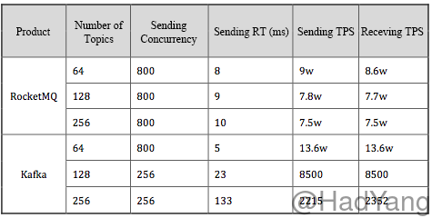
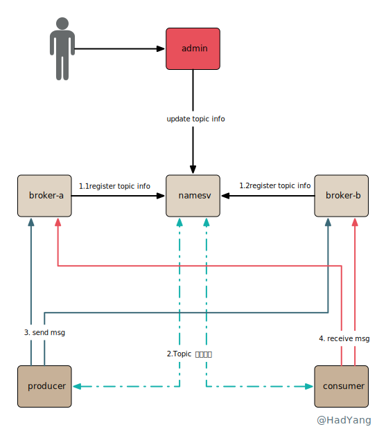
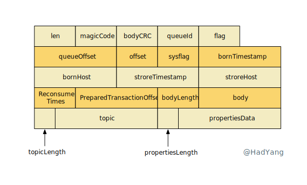
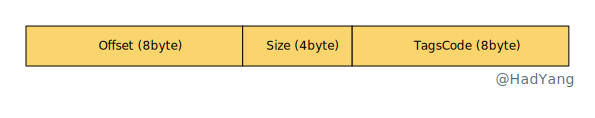
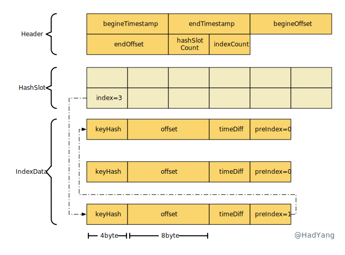
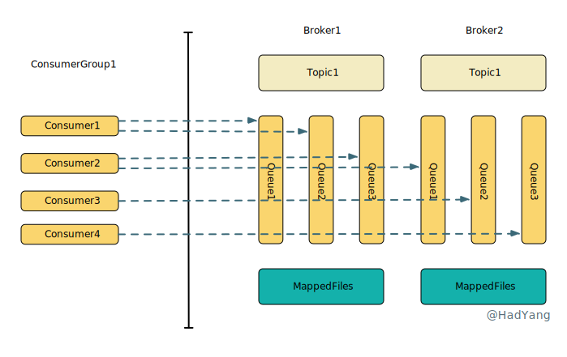
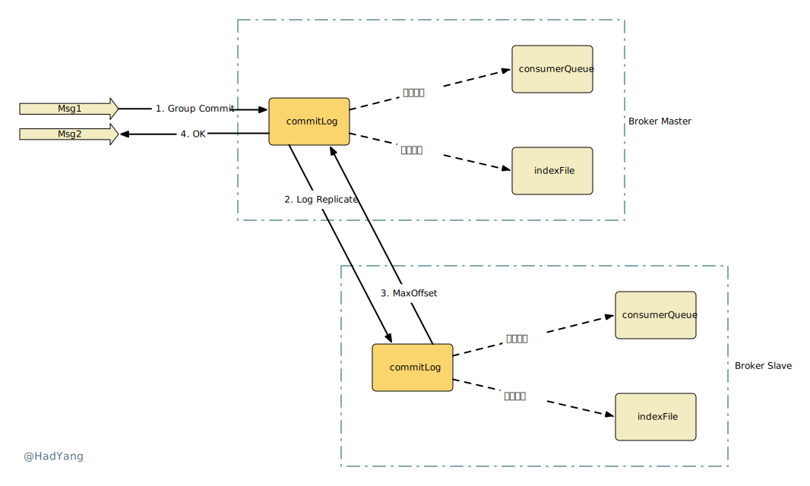
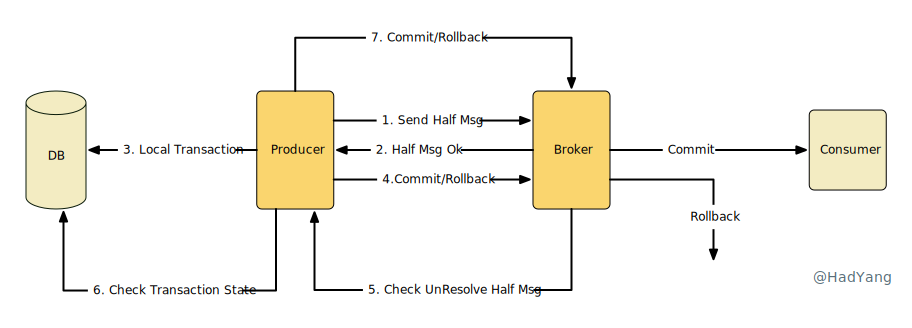
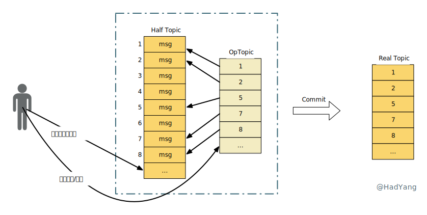

RocketMQ 关键特性解析
文章目录
关键特性
- 事务/半事务消息：本地事务和发送消息操作可以被定义到全局事务中，解决本地事务和消息发送的原子问题，提供分布式事务的 最终一致性能力
- 顺序消息：RocketMQ 支持单个 topic 下的 全局 FIFO 顺序，以及单个 topic 下按某个 key 进行分区的 分区 FIFO 顺序
- 定时/延迟消息：定时/延迟消息发送到 RocketMQ 后，会暂存到
SCHEDULE_TOPIC_XXXXtopic 中，等待特定时间投递给真正的 topic - 单向消息：本地投递消息后，不需要 RocketMQ 进行确认，性能最高但可能丢消息
- 消息标签：RocketMQ 支持对消息增加 Tag，并且消费时可以在 RocketMQ 服务端对 Tag 进行过滤
- At Least Once：每个消息至少投递一次，消费者获取到消息，处理成功后才会对消息进行 ACK，如果未 ACK， RocketMQ 会进行重试
- 消息回溯：将已成功消费的消息再次消费，RocketMQ 支持毫秒级别的回溯
- 消息重试：当消息消费失败时，对于顺序消息 RocketMQ 会自动不间断重试，无序消息会根据重试次数增加重试间隔
- 死信队列：当消息重试到达最大次数后，消息会被放入一个特殊的死信队列，不再进行重试
- 消息重投：当消息发送失败时，Producer 会重试发送
- 流量控制：当消息发送过快时，Broker 根据策略拒绝 Send 流量；当消费者消费过慢时，会降低拉取消息的频率
性能对比
性能测试对比下 Kafka 和 RocketMQ 在 topic 增加时的表现。测试配置：每个 topic 有 8 个分区，每个 topic 都有一个订阅者，并且 topic 数量逐步增加。

通过上面性能测试数据，我们能看到 RocketMQ 和 Kafka 在不同的 topic 量级下，都能平衡 Send 和 Receive 速率，没有大量的消息积压。但也存在以下区别：
- 在 topic 较少时，Kafka 的吞吐量、延迟更低
- 在 topic 从 68 到 256 的增长过程中， Kafka 性能劣化 98%
- 在 topic 从 68 到 256 的增长过程中， RocketMQ 性能仅劣化 16%
Kafka 劣化的如此明显和其实现方式有关，Kafka 对每个 topic 每个分区都存储一个文件。当 topic 个数增加时，这种将消息分散到多个文件的存储方式会加剧 IO 竞争，导致性能下降。
相反，RocketMQ 在物理上只存在一个文件，topic 和 分区都是逻辑概念，所以 topic 增加不会导致 RocketMQ 性能的急剧下降。因此，Kafka 适合少量 topic 的场景， RocketMQ 适合多 topic 场景。
系统架构
Topic 是一组相似消息的集合，每个消息都属于某个 Topic，RocketMQ 中的 Topic 属于逻辑结构。在一次消息的发送中，RocketMQ 多种不同组件分工合作，包含管理 Topic 路由的 NameServer、存储消息的 Broker、以及发送消息的 Producer和处理消息的 Consumer。
- NameServer 保存集群的元信息，最主要的就是 Topic 路由，路由数据通过 Broker 上报，存储在本地内存中。一个集群中可以配置多个 NameServer 以提供容错保障，NameServer 之间独立无感知。
- Broker 存储消息数据的模块，一个集群中可以部署多个 Broker 主节点，一个 Broker 主节点可以部署多个从节点，提供高可用方案。 Broker 在启动时会初始化系统默认的 Topic，以完成某些功能。一个 Topic 可以存储在多个 Broker 主节点中，当 Broker 启动时，会对集群中所有 NameServer 进行注册，将自己的 Topic 信息上报。
- Producer 消息发送方，通过 NameServer 获取消息路由，将消息投递到 Broker 上。对于事务消息还需要实现事务查询接口。
- Consumer 消息消费方，有集群和广播两种消费方式。通过 NameServer 获取消息路由，并定时从 Broker 拉取消息。在客户端的实现上，有 Push 和 Pull 两种方式，本质上都是拉取的方式， Push 只是 SDK 自动完成拉取工作。
- Admin 集群管理平台，可以对集群进行监控，修改路由信息等。

路由机制
消息系统中最重要的就是路由，消息从何处来、存放到何处、被谁消费，这都是通过路由机制来决定的，RocketMQ 中的 NameServer 承担起了管理路由的职责。在 Producer/Consumer 启动时，从 NameServer 获取 Topic 的路由，其中包括 Borker/Queue 的相关信息。
public class TopicRouteData extends RemotingSerializable {
private String orderTopicConf;
private List<QueueData> queueDatas;
private List<BrokerData> brokerDatas;
private HashMap<String/* brokerAddr */, List<String>/* Filter Server */> filterServerTable;
}
public class QueueData implements Comparable<QueueData> {
private String brokerName;
private int readQueueNums; //当前Broker上读队列个数
private int writeQueueNums; //当前Broker上写队列个数
private int perm; //Topic的读写权限 6=可读可写
private int topicSynFlag;
}
public class BrokerData implements Comparable<BrokerData> {
private String cluster;
private String brokerName;
private HashMap<Long/* brokerId */, String/* broker address */> brokerAddrs;
}
可以看到，QueueData 中 readQueueNums writeQueueNums 控制 Borker 上队列的个数。在 Producer/Consumer 获取到路由信息后，会根据这两个参数的配置来构建 MessageQueue。在客户端的视角来看， MessageQueue 和 Broker 上的 ConsumerQueue 是对应的。
public static TopicPublishInfo topicRouteData2TopicPublishInfo(final String topic, final TopicRouteData route) {
...
for (int i = 0; i < qd.getWriteQueueNums(); i++) {
MessageQueue mq = new MessageQueue(topic, qd.getBrokerName(), i);
info.getMessageQueueList().add(mq);
}
...
}
public static Set<MessageQueue> topicRouteData2TopicSubscribeInfo(final String topic, final TopicRouteData route) {
...
for (int i = 0; i < qd.getReadQueueNums(); i++) {
MessageQueue mq = new MessageQueue(topic, qd.getBrokerName(), i);
mqList.add(mq);
}
...
}
Producer/Consumer 会根据 MessageQueue 进行发送/拉取消息。注意，当写队列个数大于读队列个数时，多出来的队列无法被消费。
消息存储
一次典型的 RocketMQ 消息由 生产者（Producer）同步/异步发送到 Brocker，每个消息都必须确定一个 Topic。Brocker 将消息持久化存储在本地，消息可以由 消费者 从 Broker 拉取，或 Broker 推送到消费者。每个消费者都归属于一个 消费组，同一个消息（广播消息除外）在一个消费组里只能被消费一次。消费者在获取到消息后执行本地业务代码，成功后发送 Brocker 确认消息。
RocketMQ 的很多关键特性都是其持久化存储机制提供的，下面我们来看下消息是如何存储和索引的。Broker 中 DefaultMessageStore 处理存储的核心逻辑，所有消息都存储到 CommitLog，然后通过 异步 任务将消息构建为用于查询的 IndexFile 和用于消费的 ConsumeQueue。
CommitLog

CommitLog 是由一条条消息记录组成的数组结构，发送到 Broker 的消息被顺序的写入 CommitLog 中。每条记录都包含消息的所有信息，bodyCRC 是消息体的校验码； offset 作为消息在 Broker 上的唯一标识，在 IndexFile/ConsumeQueue 等文件中标识消息； preparedTransactionOffset 在事务消息中存储半事务消息的 offset； QueueId 标识消息所在的 ConsumerQueue；
ConsumerQueue
在 RocketMQ 中每条消息都会被存储到 ConsumerQueue 中供消费者消费，一个 Topic 可以拥有多个 ConsumerQueue ，每个 ConsumeQueue 都分配一个 QueueId。

ConsumerQueue 本身的结构也很简单，每条记录包含 offset/size/tagHashCode。前面两个就不多介绍， tagHashCode 存储消息在发送时指定 Tag 的哈希值，当消费者指定过滤条件时，就可根据这个哈希值进行 过滤。
IndexFile

IndexFile 的内容主要包含 Header、HashSlot 以及 IndexData，本质上是一个 哈希表 的结构，当哈希碰撞后通过 PreIndex 构建单向链表。Header 包含时间戳、Offset以及哈希表相关信息，大小固定为 40 byte。
IndexData 部分是由 20byte 记录行组成的数组，每行记录都对应一个 Index（类似于数组的下标）。每行记录包含 KeyHash（消息 Key 的哈希值）、Offset（消息在 CommitLog 中的偏移量）、TimeDiff（当前消息相对于Header中时间的偏移量）以及 PreIndex（同一个 Slot 中下一条消息的下标）。
HashSlot 默认有 5,000,000 个，将消息的 key 进行哈希取模选择一个 Slot 存储消息的下标。
Topic创建
RocketMQ 可以手动创建 Topic，也可以在 Producer 发送消息时自动创建。自动创建逻辑在实现时比较有意思，当 Producer/Consumer 启动时会开启一系列定时任务，包括定时从 NameServer 获取路由信息。当 Producer 发送消息时，若未发现 Topic 路由信息，则获取 Topic TBW102 的路由信息，并以此发送消息。 TBW102 属于一种系统 Topic，在 Broker 启动时就会创建。
负载均衡
Producer 的负载均衡相对来说比较简单，默认策略下是随机选取一个 MessageQueue（客户端概念，对应Broker的ConsumeQueue）。当开启 LatencyFaultTolerance 策略后，在默认策略的基础上，对之前失败的 MessageQueue 按一定的时间做退避。例如，如果上次请求的 latency 超过 550ms，就退避 3000ms；超过 1000ms，就退避 60000ms；
RocketMQ 中的 Consumer 支持集群消费和广播消费，集群消费的负载均衡会复杂一些，需要处理 ConsumerGroup 重复消费的问题。在实现上 RocketMQ 并没有通过集中化的方式来处理重复消费，而是通过算法策略（默认为平均分配），可以看下面的示例图。

这里的平均分配算法，类似于分页的算法，将所有 MessageQueue 排好序类似于记录，将所有消费端 Consumer 排好序类似页数，并求出每一页需要包含的平均 size 和每个页面记录的范围 range ，最后遍历整个 range 而计算出当前 Consumer 端应该分配到的记录，具体算法实现逻辑可以参考源码 AllocateMessageQueueAveragely。
正是由于这种非集中化的处理方式， RocketMQ 在负载均衡过程中会出现重复消费，不能保证 Exactly Once。
高可用

RocketMQ 支持 Broker 的复制能力，提供高可用方案，保证消息不会丢失，但 不支持 自动的主备切换。如果开启同步复制，当消息发送到 Master 后，则将消息转发给 Slave，当 Slave 定时将消息 Flush 后，上报 Offset 这时 Master 就可以返回给 Producer 成功。
事务消息
RocketMQ 采用了 2PC 的思想来实现了提交事务消息，同时增加一个补偿逻辑来处理二阶段超时或者失败的消息，如下图所示。

当发送事务消息时，首先会修改消息的 Topic、QueueId 并存储。当用户本地事务执行完成后，会提交或回滚事务消息，这时 RocketMQ 会新增一条关联到 Half 消息的 Op 消息，用于标记该 Half 消息已提交或回滚，不需要进行补偿。

同时，RocketMQ 有一个定时任务 TransactionalMessageCheckService 扫描 Half 消息，对于没有提交或回滚的事务消息进行补偿。
顺序消息
从上面负载均衡的小节中能发现，一个 ConsumerQueue 最多只能被一个 Consumer 消费。因此，顺序消息在实现上就更简单了，通过将消息分配到一个 ConsumerQueue 中实现消息的顺序消费。一个典型的顺序消息实现如下：
SendResult sendResult = producer.send(msg, new MessageQueueSelector() {
@Override
public MessageQueue select(List<MessageQueue> mqs, Message msg, Object arg) {
Integer id = (Integer) arg;
int index = id % mqs.size();
return mqs.get(index);
}
}, orderId);
而全局顺序就是更简单了，将所有的 Msg 都在一个 ConsumerQueue 里，就能实现全局顺序消费😂